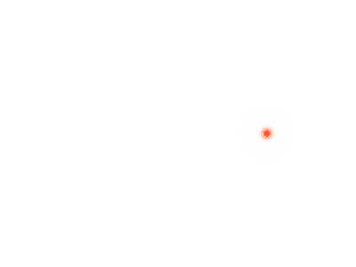

This tutorial descibes how to code a dot moving in a circle, on white background.
The complete code can be found at the end of this tutorial. You will be guided through the steps of writing it.
Usually, one of the strenghes of moviemaker2 code is its shortness. To avoid cluttering moviemaker2 scripts with moviemaker2. snippets, we do:
from moviemaker2 import *
Yes, you can generate the actual display backend before creating something that is to render:
import Tkinter
import moviemaker2.ext.tk
tk = Tkinter.Tk()
render_frame = moviemaker2.ext.tk.RenderFrame(tk, nbins=100)
render_frame.pack()
In the very end of the code, we will do:
tk.mainloop()
The rendering will happen in separate threads. When you click the close button of the Tk window, the render threads will exit.
We need some specs of the render frame:
shape = (300, 400)
(shapey, shapex) = shape
Y = numpy.linspace(-3, 3, shapey)[:, numpy.newaxis].repeat(shapex, axis=1)
X = numpy.linspace(-4, 4, shapex)[numpy.newaxis, :].repeat(shapey, axis=0)
mesh_array = numpy.asarray([Y.T, X.T]).T
Note, that the first dimension is, in meshes, the y axis, and the second one is the x axis. This is how ndarrays print. For layers, the very first axis is the band axis.
The trick in the end makes sure the coordinate axis (Y or X mesh component) is the last one. This is useful when subtracting e.g. a vector from a mesh, where broadcasting will do the job as expected (we will see this later).
We want to express the coordinate of the point in polar coordinates. The angle is the time. The radius shall be fixed. We write:
import numpy
point_position = asmatharray([-numpy.sin(p('time/real')), numpy.cos(p('time/real'))]) * 2
There are several important things here to note:
The parameters are requested by p Functions. Here, the 'time/real' parameter will be set by the render object, along with 'time/frame'.
Due to our meshs coordinates, 2 is a good choice for the radius.
Now, we want a raster layer from the point position, with a Gaussian point centered at the point_position.
We first generate an Extension inserting the mesh as a parameter:
mesh = Extension(p=p('mesh'), value=mesh_array)
You can read this as a ‘mesh’ = mesh expression, but it will be executed on call time.
We can use this with the pipe operator to provide the mesh to other Functions. We do this and create the mask for the raster layer in one step:
from moviemaker2.rasterisers.distance import Distance
point_mask = mesh | numpy.exp(-Distance(p('mesh') - point_position) ** 2 / 0.1 ** 2)
This need certainly some elaboration:
The second part, after the pipe, should be clear. It calculates the Gaussian function around point_position with widt 0.1. Only new is there Distance(), yielding a distance ndarray from a mesh.
More interesting, is the mesh | ... part. It will execute mesh first, and feed the output of this into the part right of the pipe operator. This results in the 'mesh' parameter being inserted by mesh (its only functionality), and such it is available to p('mesh') in the calculation part after the pipe.
You can pipe as many operands as you wish, they will all be executed in order:
X = a | b | c
Rasterisers are Functions generating a raster mask or similar.
Now, we want an argb layer (alpha-red-green-blue) from this mask. It shall be red coloured, and thus we do:
zeros = numpy.zeros(shape)
point = asmatharray([point_mask,
point_mask,
0.2 * point_mask,
zeros])
We have now our red dot, with proper alpha channelling. So we can blit it onto a white background:
ones = numpy.ones(shape)
white = numpy.asarray([ones, ones, ones, ones])
alpha = AlphaBlendRasterStack(background=white)
alpha ^ point
That’s it. Some more notes:
Accumulation of layers is done by Stacks. Not by the layers themselves. Especially raster stacks will have a background.
Addition of objects to stacks is done with the XOR operator ^. There is a return value, but the accumulation happens in-place. The return values is, nevertheless, the extended stack, to provide for multiple accumulation:
stack ^ layer1 ^ layer2
Now we’re nearly done. We just need to convert it to a PIL image:
import moviemaker2.ext.PIL_from_argb
pil = moviemaker2.ext.PIL_from_argb.PILfromARGB()
This thing (pil) should be stacked with an argb ndarray generator, like this: (alpha | pil). We use this as argument to Render():
import moviemaker2.ext.render
render = moviemaker2.ext.render.Render(fn=(alpha | pil))
To finally generate frames, we call the Render():
import os.path
render(framerate=25, directory=os.path.join('Dot', 'Frames'), extension='jpg', startrealtime=0, stoprealtime=6.5, render_queue=render_frame.render_queue)
and then our tk.mainloop() chimes in. We will see the frames render. Note: We handed over render_queue=.... This is the target where to notify about rendered frames.
You must create the directory where to put the frames first (Dot/Frames/).
Here’s an animated gif created from the frames. You can download the gif here.
And here comes the full code. It has been sorted to comply with well-established Python coding rules. You can downlaod the code here.
import Tkinter
import os.path
import numpy
from moviemaker2 import *
from moviemaker2.rasterisers.distance import Distance
import moviemaker2.ext.tk
import moviemaker2.ext.PIL_from_argb
import moviemaker2.ext.render
tk = Tkinter.Tk()
render_frame = moviemaker2.ext.tk.RenderFrame(tk, nbins=100)
render_frame.pack()
shape = (300, 400)
(shapey, shapex) = shape
zeros = numpy.zeros(shape)
ones = numpy.ones(shape)
Y = numpy.linspace(-3, 3, shapey)[:, numpy.newaxis].repeat(shapex, axis=1)
X = numpy.linspace(-4, 4, shapex)[numpy.newaxis, :].repeat(shapey, axis=0)
mesh_array = numpy.asarray([Y.T, X.T]).T
point_position = asmatharray([-numpy.sin(p('time/real')), numpy.cos(p('time/real'))]) * 2
mesh = Extension(p=p('mesh'), value=mesh_array)
point_mask = mesh | numpy.exp(-Distance(p('mesh') - point_position) ** 2 / 0.1 ** 2)
point = asmatharray([point_mask,
point_mask,
0.2 * point_mask,
zeros])
white = numpy.asarray([ones, ones, ones, ones])
alpha = AlphaBlendRasterStack(background=white)
alpha ^ point
pil = moviemaker2.ext.PIL_from_argb.PILfromARGB()
render = moviemaker2.ext.render.Render(fn=(alpha | pil))
render(framerate=25, directory='Frames', extension='jpg', startrealtime=0, stoprealtime=6.5, render_queue=render_frame.render_queue)
tk.mainloop()
Check out the other Tutorials (TODOC) or go to the Elements of Moviemaker2 section.
{kind=link}